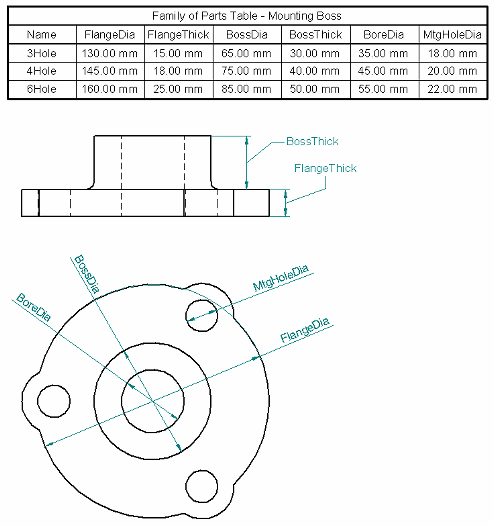

Family of parts dimension tables on drawings
Family of parts dimension tables placed on drawings are useful for defining the size and location of features derived from similar family members. The Family Of Parts Table command automatically generates a table that contains all of the variables derived from a family of parts, and it imports the dimensional and positional data for all members of the selected family. You also can link the family member variables to dimensions on the drawing.
The family of parts table lists family member location and size data by row. Family variable labels are shown as column headings. You can easily customize the table by making formatting changes. You can insert user-defined columns into the table and extract other model information into them. For example, you can use property text to extract graphical model information to supplement the dimensional and positional values derived from the family of parts.

Creating a family of parts table on a drawing
To create a family of parts table on a drawing, you begin by placing one or more drawing views containing a family member, and then you add dimensions to them.
Next, choose the Family Of Parts Table command  , and then select a drawing view of a family member.
, and then select a drawing view of a family member.
The command displays the Variables tab on the Family Of Parts Table Properties dialog box, where you can specify which family variables you want to include and exclude from the table.
You then can place the table on the drawing sheet, or you can first use the other options on the multi-tabbed Family Of Parts Table Properties dialog box.
-
You can add and edit data using the Data tab. You also can create and edit column headings by double-clicking the blank cell at the top of the column, or by selecting a column and then selecting the Column Format button
 .Note:
.Note:Column headings are required if you want to sort and group the table data. See the Help topic, Using the Data tab.
-
You can specify the table style and the maximum table height or number of data rows using the General tab. The Location tab specifies the placement location on the sheet, and whether to place it on the current sheet or on one or more new table sheets.
See the Help topic, Defining table size and location.
-
The Title tab is where you specify the text, formatting, and positioning of table titles and subtitles. See the Help topic, Using the Title tab.
-
Optionally, you can use the Sorting tab to specify that the table is sorted based on any column headers you defined. You can use the Groups tab to group table data into categories, which keep like items together. See the following Help topics:
The last step is to link the drawing dimensions to the variables in the family of parts table.
Do not create a drawing from the family of parts source document. Instead, create the drawing from one of the family members. For more information, see the Using family members in assemblies and drawings section in the Help topic, Families of Parts.
Including and excluding family variables
The Variables tab in the Family Of Parts Properties dialog box is where you choose the variables that you want to display in the family of parts drawing table. These are also the variables that you can link to dimensions on the drawing.
The Variables tab contains two lists of variables:
-
The left-hand pane, Variables, displays all of the variables found in the Variable Table for the selected family of parts, less those variables that are listed in the right-hand pane.
-
The right-hand pane, Variables Shown In Table, shows the variables that are currently selected for the drawing table.
You can remove variables from the table using the Remove button. You can add variables to the table using the Add button.
When you click OK, the data for all family members is imported, and the drawing table is ready to place on the drawing sheet.
Linking family variables to drawing dimensions
After you place the table on the drawing, you can link each of the family variables to its corresponding driven dimension on the drawing. The links are associative, so that when the member changes in the model, the dimension on the drawing goes out of date.
Each dimension can be linked to just one variable, but you can link the same variable to multiple dimensions. This enables you to illustrate the same dimension in different views.
-
To create a link, use the Link Variable button on the Family Of Parts Table command bar:
 .
. -
To remove a link, use the Unlink Variable button on the command bar:
 .
.
Formatting a family of parts table
You can make formatting changes to a table before you click to place it, or you can place it first and then select the Properties button on the command bar or on the table shortcut menu to modify the table and data format.
Some of the formatting changes you can make include:
-
Add one or more table titles of multiple lines of text.
-
Hide a table row. Each row displays the values for a member of the family. You may not want to show the data for members other than the one in the drawing view.
-
Hide a table column. Each column displays the family-derived values for a family variable. You may not want to show the values for a variable that does not have a corresponding dimension shown on the drawing view.
-
Reorder members (rows) and variables (columns). You can move rows up and down, and you can move columns left and right.
-
Change the data display order. You can do multi-column sorting with up to three columns.
-
Insert one or more user-defined data columns, and specify that information such as mass, volume, and material be extracted from the model using property text strings.
Note:You can use property text to extract information from the Variable Table by selecting Variables From Active Document as the source in the Select Property Text dialog box. To learn how to use property text in a family of parts table, see the Extract model information using property text section in Make changes to a parts list or table.
Use the options on the Format Column dialog box to do such things as add, align, and position headers, hide columns, change column width, and align data within the table.
Use the options on the Format Table Cells dialog box to apply formatting to the currently selected cell in a header row, or to all data cells in a column.
To learn how you can change the appearance of individual elements of a table—titles, columns, headers, and data cells—without changing the table style, see the Help topic, Manipulate table rows and columns.
To learn how to change the table format, see Make changes to a parts list or table.
Updating a family of parts table
When a change to a family of parts causes a drawing table to go out of date, a thin gray border surrounds the table.
To update the table based on the model change, use the Update Family Of Parts Table command on the table shortcut menu. You also can use this command to apply formatting changes you make to an existing table.
Defining and modifying table styles
You can use the Styles command to create your own, fully customized Table styles in the Draft environment and make them available for many different table applications.
The Table style provides line style properties that control the display of table borders and grids. For example, you can change the color, type, and width of the border and grid lines. Set the Type to None if you do not want to display a table component.
For each component of a table, you also can define a text style. You can define different text styles for the table title, column headings, and cell data.
To learn more, see help topic Table styles.
To learn how to customize table styles, see Help topic Create or modify a table style.